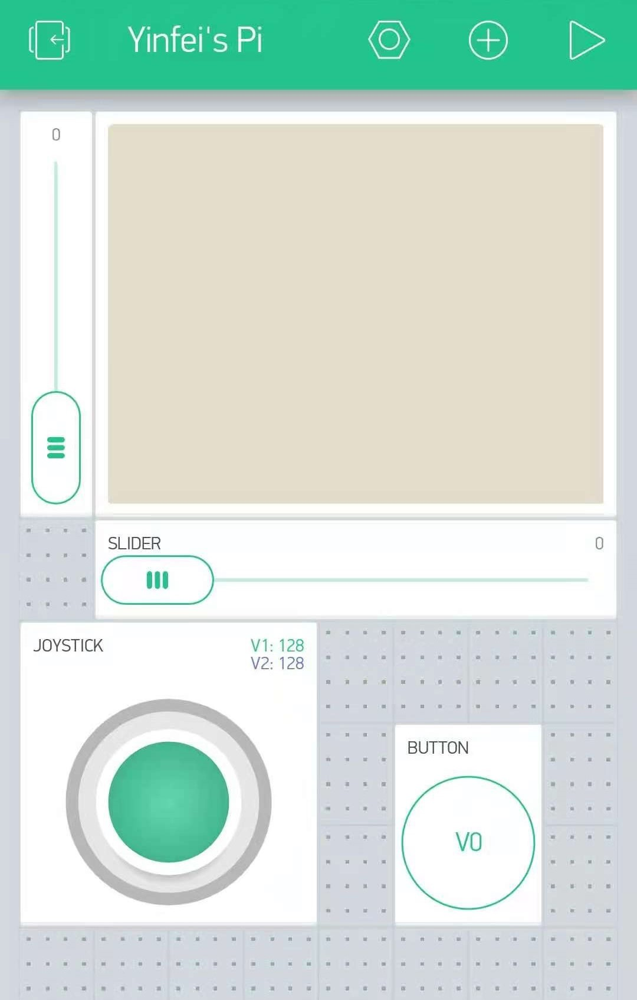

Phase 2 robot

I want my robot to make my robot flexible, since it was still a prototpye. The raspberry charger is to large. for a simple remote robot car. raspberry is also overkill. These component might bechage in the future. Thus i want to sort my parts into modules. The first layer is L298N motor drive and battery pack. This is the back bone of the robot. And the second layer is raspberry charger since it is large enough to take a whole layer The third layer is raspberry pi modules. And the rest of place will be avaliable for other modules such as camera or ultra sonic sensor

I was think about add a damper to my robot. Thus i brainstormed 2 way to mount the motor. First is to motor the mount with no degree of freedom. The second is mount with 1 degree of freedom and add damper later. I make to mount similarly. Thus all i need is to swap motor mount.


I want my camera to have 2 degree of freemdom and drive my 2 180 degree servo. I might not use all the up to 180 degree.


I only printed out my Layer 1, Layer2, and my motor mount. All my desgin was planning to use a 3mm diameter screw and nuts. My 3d CAD leave all my hole to 3.1mm. But the screw would not be able to fit. Then i find out 2.5mm screw could slot into 3.1mm hole. Thus i swith all the hold diameter to 3.5mm.
I aslo find out the respberry pi screw is 2.5mm diameter. And my raspbery charger holder need to switch the width from 68mm to 70mm.
I also cut some unnasserry part on my base to save some material and lower the printing time.

During the time of printing i start working on my code. I was planning to use the joystick to control my motor, and use 2 slider to control my robot. I will use to 5 global state to represent the direction. and select 2 speed or 3 speed region based on performance.
Lesson learned: Fushion 360
Codetill date of final upload Home Back